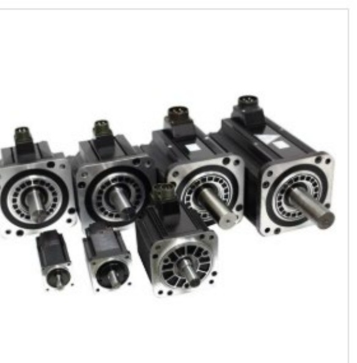

CS
CAM
CNC
CNC 제어기
모션 제어기
서보모터/드라이브
스텝모터/드라이브
EtherCAT IO 모듈

서보모터/드라이브 · 04
SMG & SMA 서보모터
고토크와 고회전, 용도에 맞게 고르는 서보모터.
200W~7.5KW 라인업에 SMG(고토크)·SMA(고회전) 두 가지 특성을 갖춰 어떤 부하 조건에도 최적의 조합을 찾을 수 있습니다.
홈
/
서보모터/드라이브
/
SMG & SMA 서보모터
…
상세 콘텐츠 준비 중입니다
SMG & SMA 서보모터의 상세 사양, 구성도, 적용 사례는 추후 업데이트될 예정입니다.
서보모터/드라이브 목록으로